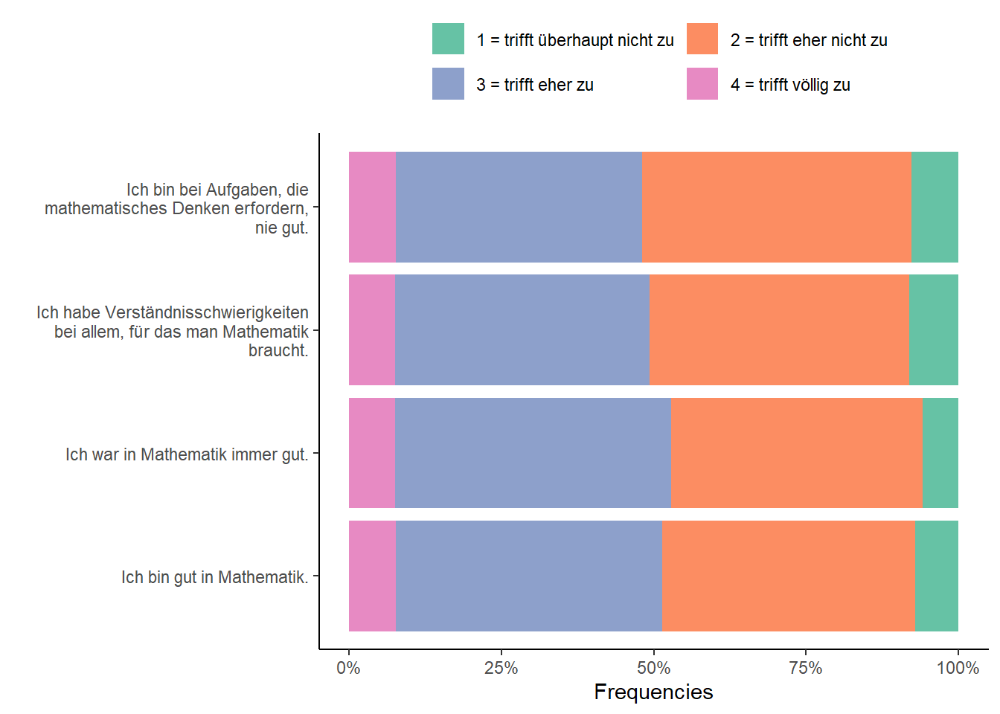

6 Import, merge & reshape data
This part provides an introduction to import, merge and reshape data sets with R.
6.1 Import (or export) data sets
In R data sets are usually stored as data.frame objects (see also the section Data Structures). There are other object types for data sets such as tibble from the tibble package (Müller & Wickham, 2023) or data.table from the data.table package (Dowle & Srinivasan, 2023) which are more efficient, especially when it comes to (very) large data sets (see e.g., Chapter 10 of R for Data Science and the vignette of the data.table package).
6.1.1 Data frames
Data sets can come in many different file formats. For example, .txt, .csv files, or .sav (SPSS), dta (Stata), .sas7bdat (SAS) files.
To import e.g., .csv or .txt files, R offers a couple of functions that deal with these formats:
-
utils::read.table: Reads a file in table format and creates a data frame from it, with cases corresponding to lines and variables to fields in the file. base::readLines: Read some or all text lines from a connection.…
When it comes to other (software specific) formats, you need additional packages e.g., foreign (R Core Team, 2022) or haven (Wickham et al., 2022).
To import the SPSS data sets (.sav file), we may use the read.spss function from the foreign package (R Core Team, 2022). There are a couple of default arguments which you (likely) want to change:
-
use.value.labels: logical: convert variables with value labels into R factors with those levels? (default isTRUEswitch toFALSE) -
to.data.framelogical: return a data frame? (default isFALSEswitch toTRUE) -
use.missings: logical: should information on user-defined missing values be used to set the corresponding values to NA?
exDatImpforeign <- foreign::read.spss("path-to-file.sav-file",
use.value.labels = FALSE,
to.data.frame = TRUE,
use.missings = TRUE)To export data to a file, you can use the base::write function(s):
Again, when it comes to software-specific file formats you need additional packages such as foreign (R Core Team, 2022) or haven (Wickham et al., 2022):
In the following, the use of the write.foreign function is displayed:
getwd()
codefile <- tempfile()
foreign::write.foreign(exDat,
"exDat.sav",
codefile = codefile,
package = c("SPSS"))
unlink(codefile)Note that there are a couple of further steps necessary to get a working .sav file. We recommend using the haven (Wickham et al., 2022) package (see below), at least when it comes to exporting data sets.
6.1.2 Tibbles
The tibble package is part of the tidyverse2 (Wickham, 2023).
First, check the class of the example data set exDat.
class(exDat)[1] "data.frame"The as_tibble function from the tibble package (Müller & Wickham, 2023) turns an existing object (a data frame or matrix) into tibble which is a data.frame variant (with nice defaults) and class tbl_df (see ?tibble::as_tibble).
The write_sav function from the haven package (Wickham et al., 2022) can also be used to export data sets. Before exporting the data, you may want to check your working directory with the getwd() function.
To import the data set, we use the read_sav function from the haven package.
exDatImpTest <- haven::read_sav("exDat.sav")Note that the read_sav returns a tibble, data.frame variant (with nice defaults).
For more see https://tibble.tidyverse.org/ and Chapter 10 of R for Data Science.
6.2 Merge data sets
Merging data sets is necessary, because we often work with different data sources. By merging, we combine the information from multiple data sets to create one (complete) data set.
PopModGSC <- "
eta2 =~ .8*gsc1 + .8*gsc2 + .8*gsc3 + .8*gsc4
eta2 ~~ 1*eta2
eta2 ~ 0*1
gsc1 | -1.5*t1 + 0*t2 + 1.5*t3
gsc2 | -1.5*t1 + 0*t2 + 1.5*t3
gsc3 | 1.5*t1 + 0*t2 + -1.5*t3
gsc4 | 1.5*t1 + 0*t2 + -1.5*t3
"
exDatGSC <- lavaan::simulateData(model = PopModGSC,
sample.nobs = 700,
seed = 999)
exDatGSC$id <- 1:nrow(exDatGSC)The merge function is designed to merge two data frames by common columns or row names, or do other versions of database join operations. It requires at least two input arguments x,y that are data frames, or objects to be coerced to one. However, it is recommended to provide some more information by using the further input arguments, including:
by,by.x,by.y: specifications of the columns used for merging. See ‘Details’.all: logical;all= L is shorthand forall.x= L andall.y= L, where L is eitherTRUEorFALSE.all.x: logical; ifTRUE, then extra rows will be added to the output, one for each row inxthat has no matching row iny. These rows will haveNAsin those columns that are usually filled with values fromy. The default isFALSE, so that only rows with data from both x and y are included in the output.all.y: logical; analogous toall.x.…
id msc1 msc2 msc3 msc4 age sex edu fLang gsc1 gsc2 gsc3 gsc4
1 1 2 3 2 2 9.815538 0 0 german 3 3 2 3
2 2 3 2 1 1 8.980194 1 0 german 3 3 3 4
3 3 2 2 3 3 12.758157 0 0 german 2 1 2 2
4 4 2 2 3 2 10.578846 0 0 german 2 2 3 3
5 5 3 2 2 2 9.894364 1 0 german 3 3 2 3
6 6 3 3 3 2 10.446850 0 0 german 2 3 3 3In the dplyr packages, there are 4 functions that are designed to combine data sets which need two input arguments x and y:
dplyr::left_joinkeeps all observations in x.dplyr::right_joinkeeps all observations in y.dplyr::inner_joinonly keeps observations from x that have a matching key in y.dplyr::full_joinkeeps all observations in x and y.
It is recommended to use the by argument to specify the column(s) that are used for joining/merging.
msc1 msc2 msc3 msc4 age sex edu fLang id gsc1 gsc2 gsc3 gsc4
1 2 3 2 2 9.815538 0 0 german 1 3 3 2 3
2 3 2 1 1 8.980194 1 0 german 2 3 3 3 4
3 2 2 3 3 12.758157 0 0 german 3 2 1 2 2
4 2 2 3 2 10.578846 0 0 german 4 2 2 3 3
5 3 2 2 2 9.894364 1 0 german 5 3 3 2 3
6 3 3 3 2 10.446850 0 0 german 6 2 3 3 3If you need to quickly save an object (e.g., a data set like exDatComb), you may use the base::saveRDS function.
#getwd()
saveRDS(exDatComb,
"exDatComb.RDS")6.3 Reshape data
Reshaping data refers to the process of transforming the structure of data. Two popular ways of structuring data sets are the so-called wide and long data format. In Table 6.1 an example longitudinal data set is depicted in the wide and long format.
Table 6.1: Example (longitudinal) data set in the…
| PID | \(Y_1\) | \(Y_2\) | \(\dots\) | \(Y_t\) |
|---|---|---|---|---|
| 1 | 3 | 4 | ||
| 2 | 2 | 2 | ||
| 3 | 1 | 4 | ||
| 4 | 4 | 1 | ||
| \(\vdots\) | ||||
| N |
| PID | \(Y\) | Time |
|---|---|---|
| 1 | 3 | 0 |
| 1 | 4 | 1 |
| 2 | 2 | 0 |
| 2 | 2 | 1 |
| \(\vdots\) | ||
| 4 | 4 | 0 |
| 4 | 1 | 1 |
| \(\vdots\) | \(\vdots\) | |
| N | t |
- Wide data format
- rows = repeated measurements of 1 unit in separate columns
- columns = (time-point-)specific variables (i.e., \(Y_{1}\), \(Y_{2}\), \(\dots\), \(Y_{t}\))
- rows = repeated measurements of 1 unit in separate columns
- Long data format
- rows = one (time-point-)specific measurement per unit
- columns = multiple variables collapsed into a single column (i.e., \(Y\))
Another data scenario in which you may want to reshape your data is when the goal is to examine or visualize (see below) multiple items of a scale. This is the working example.
The reshape function from base R is designed to transform data sets between wide and long format. The following arguments are recommended to use:
-
data: a data frame -
varying: names of sets of variables in the wide format that correspond to single variables in long format (‘time-varying’). This is canonically a list of vectors of variable names, but it can optionally be a matrix of names, or a single vector of names. In each case, whendirection="long", the names can be replaced by indices which are interpreted as referring tonames(data). See ‘Details’ for more details and options. -
v.names: names of variables in the long format that correspond to multiple variables in the wide format. See ‘Details’. -
timevar: the variable in long format that differentiates multiple records from the same group or individual. If more than one record matches, the first will be taken (with a warning). -
times: the values to use for a newly created timevar variable in long format. See ‘Details’. -
direction: character string, partially matched to either"wide"to reshape to wide format, or"long"to reshape to long format.
Now we transform the example data set exDat to the long format…
exDatLong <- reshape(exDat,
varying = names(mscItems),
v.names = "value",
timevar = "Item",
times = names(mscItems),
idvar = "id",
direction = "long")
head(exDatLong[sort(exDatLong$id),], 10) age sex edu fLang id Item value
1.msc1 9.815538 0 0 german 1 msc1 2
1.msc1.1 9.815538 0 0 german 1 msc1 2
1.msc1.2 9.815538 0 0 german 1 msc1 2
1.msc1.3 9.815538 0 0 german 1 msc1 2
2.msc1 8.980194 1 0 german 2 msc1 3
2.msc1.1 8.980194 1 0 german 2 msc1 3
2.msc1.2 8.980194 1 0 german 2 msc1 3
2.msc1.3 8.980194 1 0 german 2 msc1 3
3.msc1 12.758157 0 0 german 3 msc1 2
3.msc1.1 12.758157 0 0 german 3 msc1 2… and back to to the wide format.
exDatWide <- reshape(exDatLong,
varying = names(mscItems),
v.names = "value",
timevar = "Item",
idvar = "id",
direction = "wide")
head(exDatWide, 10) age sex edu fLang id msc1 msc2 msc3 msc4
1.msc1 9.815538 0 0 german 1 2 3 2 2
2.msc1 8.980194 1 0 german 2 3 2 1 1
3.msc1 12.758157 0 0 german 3 2 2 3 3
4.msc1 10.578846 0 0 german 4 2 2 3 2
5.msc1 9.894364 1 0 german 5 3 2 2 2
6.msc1 10.446850 0 0 german 6 3 3 3 2
7.msc1 10.897605 1 0 german 7 4 4 1 2
8.msc1 7.977382 1 0 german 8 3 3 2 1
9.msc1 10.688379 NA 0 german 9 3 3 2 1
10.msc1 9.105864 0 0 german 10 3 3 2 2#exDatWide[,paste0("msc",1:4)] == exDat[,paste0("msc",1:4)]Within the tidyverse the tidyr package (Wickham et al., 2023) offers two functions that are designed to transform the data to wide (pivot_longer) or long (pivot_wider) format.
tidyr::pivot_longer “lengthens” data, increasing the number of rows and decreasing the number of columns. The function requires only the cols statement, although the names_to and values_to arguments are recommended).
exDatLong2 <- exDat |>
tidyr::pivot_longer(cols = names(mscItems),
names_to = "Item",
values_to = "value")
head(exDatLong2, 10)# A tibble: 10 × 7
age sex edu fLang id Item value
<dbl> <dbl> <dbl> <chr> <int> <chr> <dbl>
1 9.82 0 0 german 1 msc1 2
2 9.82 0 0 german 1 msc2 3
3 9.82 0 0 german 1 msc3 2
4 9.82 0 0 german 1 msc4 2
5 8.98 1 0 german 2 msc1 3
6 8.98 1 0 german 2 msc2 2
7 8.98 1 0 german 2 msc3 1
8 8.98 1 0 german 2 msc4 1
9 12.8 0 0 german 3 msc1 2
10 12.8 0 0 german 3 msc2 2tidyr::pivot_wider “widens” data, increasing the number of columns and decreasing the number of rows. The function requires the value_from and names_from arguments (id_cols statement is recommended).
exDatWide2 <- exDatLong2 |>
tidyr::pivot_wider(values_from = "value",
names_from = "Item",
id_cols = "id")
head(exDatWide2, 10)# A tibble: 10 × 5
id msc1 msc2 msc3 msc4
<int> <dbl> <dbl> <dbl> <dbl>
1 1 2 3 2 2
2 2 3 2 1 1
3 3 2 2 3 3
4 4 2 2 3 2
5 5 3 2 2 2
6 6 3 3 3 2
7 7 4 4 1 2
8 8 3 3 2 1
9 9 3 3 2 1
10 10 3 3 2 2- Load
ggplot2
- Calculate frequencies with the
base::tablefunction (per Item) and store them in a new data set (here:mscPlot).
mscPlot <- as.data.frame( with(exDatLong, table(Item, value)) )- Visualize the frequencies using
ggplot2.
ggplot(data = mscPlot,
aes(x = factor(Item,
labels = stringr::str_wrap(mscItems, 35)), # break lines after 35 chr
y = Freq,
fill = value)) +
geom_col(position="fill") + # bar chart
scale_fill_brewer(palette = "Set2" # cosmetics start here
,labels = c("1 = trifft überhaupt nicht zu",
"2 = trifft eher nicht zu",
"3 = trifft eher zu",
"4 = trifft völlig zu")
) +
scale_y_continuous("Frequencies",
labels = scales::percent_format(scale = 100)) + # scales package for %
scale_x_discrete("") +
coord_flip() +
theme_classic() +
theme(legend.position = "top",
legend.title = element_blank()) +
guides(fill=guide_legend(nrow=2,byrow=TRUE))
see also here: https://stackoverflow.com/questions/22970091/difference-between-read-csv-and-read-csv2-in-r↩︎
for more see the section on Base R
vs.& tidyverse.↩︎